| Prosjektnavn | Kostnad |
|---|---|
| Reduserte billettpriser | 185 |
| Tryggere skoleveg | 315 |
| Økt driftstilskudd kollektiv | 340 |
| Dramsvegen | 40 |
| Stakkevollvegen - Skattørvegen | 200 |
| Ny sentrumsterminal | 315 |
| Nytt bussknutepunkt i Kroken | 35 |
| Redusere flaskehalser for bussen | 70 |
| Strandvegen | 120 |
| Strandvegen | 115 |
| Ladeinfrastruktur elbuss | 35 |
| Bedre holdeplasser | 135 |
| Tilgjengelighet for gående - holdeplasser, snarveier | 45 |
| Utvidelse bybussområdet | 20 |
| Fortau | 50 |
| Bussløsning Kvaløya | 135 |
| Innfartsparkering Skjelnan | 10 |
| Klokkargårdsbakken | 15 |
| Sykehusvegen | 45 |
| Ny bussterminal i Giæverbukta | 140 |
| E8 Flyplasstunnelen i Tromsø | 1800 |
| Tiltakspakke Langnes | 525 |
| Utbedring gang og sykkelvei Kvaløyvegen | 15 |
| Ny bru til Kvaløya | 1800 |
| Etablering av bomstasjoner | 35 |
| Sum | 6540 |
Mappeoppgave 2 - Innføring av bompenger i Tromsø: Effekt på bilisters atferd og velferd
Fakultet for biovitenskap, fiskeri og økonomi.
1. Sammendrag
Bakgrunn
En bompengeavgift ble innført på Tromsøya 5. januar 2023 som en del av byutviklingsprosjektet Tenk Tromsø. En bompengeavgift er en engangsavgift for å passere en bompengesone med et kjøretøy som blir automatisk registrert gjennom registreringsnummeret på kjøretøyet eller med bompengeavtalen som heter AutoPASS. Formålet med bompengeavgiften er å redusere biltrafikken i sentrum av Tromsø, og dermed redusere utslipp av klimagasser og lokal luftforurensning. I tillegg skal inntektene fra bompengeavgiften brukes til å finansiere kollektivtilbudet i Tromsø.
Begrunnelse
Tenk Tromsø skal gjøre det tryggere å gå eller sykle, bygge brukervennlige bussterminaler, bedre holdeplasser og knutepunkt for bussen, og gjøre tiltak som sørger for bedre traffikflyt. I tillegg skal det bedre fremkommeligheten for næringstransporten i Tromsø.
Erfaringer
Målet for Bypakke Tenk Tromsø er nullvekst i persontransport med bil. Dette målet skal nås gjennom å gjøre det enklere, tryggere og mer attraktivt å velge gange, sykkel og kollektivtransport på hverdagsreisene i Tromsø.
Bompengekostnader i Tromsø og kostnad per prosjekt
Tabell 1: Takstgruppe 1- Kjøretøy under 3,5 tonn utenom rushtid.
Tabell 2: Takstgruppe 1 - Kjøretøy under 3,5 tonn i rushtid.
| Bensin, diesel, ladbar hybrid (Full pris) | Bensin, diesel, ladbar hybrid (Gyldig avtale og brikke) | Nullustslippkjøretøy (Full pris) | Nullutslippkjøretøy (Gyldig avtale og brikke) | |
|---|---|---|---|---|
| Alle bomstasjoner (15) | 12 | 9.6 | 9.6 | 4.8 |
Tabell 3: Kostnad per prosjekt oppgitt i millioner 2021-kroner (inkl. mva).
| Bensin, diesel, ladbar hybrid (Full pris) | Bensin, diesel, ladbar hybrid (Gyldig avtale og brikke) | Nullustslippkjøretøy (Full pris) | Nullutslippkjøretøy (Gyldig avtale og brikke) | |
|---|---|---|---|---|
| Alle bomstasjoner (15) | 36 | 28.8 | 36 | 14.4 |
Struktur av redgjørelsen
I kapittel 2 skal vi se på endringen i biltrafikken i Tromsø etter innføringen av bompenger. Vi skal også se på hvordan dette har påvirket sykkelpasseringer og bruk av kollektivtransport. I kapittel 3 skal vi se på hvordan bilistene tilpasser seg bompenger. Vi skal se på hvordan bilistene endrer reisevaner, og hvordan dette påvirker bilistenes velferd. Vi skal se på en bilist som en konsument som har to valg: antall kilometer kjørt i bil eller konsumere andre goder. Kapittel 4 blir en sammenfatning av det vi har sett på. Her oppsummeres funnene fra utredningen.
2. Trafikkbildet i Tromsø før og etter innføringen av bompenger
Bilister
Tromsø er en by som har hatt en økning av personbiler i trafikken de siste årene. Med innføringen av bompenger fra 2023 er det ønskelig med nullvekst av personbiler i Tromsø sentrum. I figur 1 kan vi se totaloverblikket i trafikken rundt Tromsø.
Det første man kan observere er en økende trend med registrerte biler fra 2020-2022. Og etter innføringen av bompenger i 2023 så sees det en nedgang i antall registrerte biler målt mot samme måneder fra 2022.
Figur 1 er basert på tall fra Statens Vegvesen, her er det satt sammen alle trafikkregistreringspunkt fra bruene, rett utenfor og på selve øya. Tallene er hentet fra Statens Vegvesen sin trafikkdata.
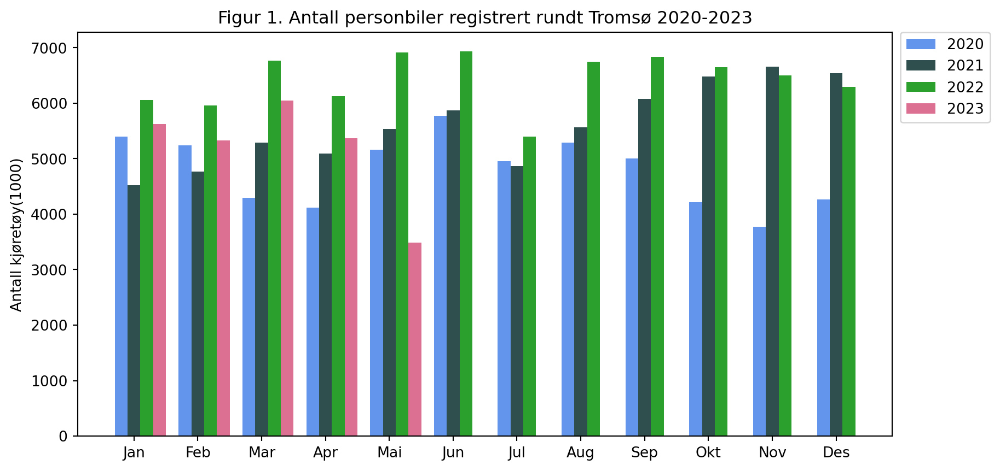
Videre skal vi se på en regresjonsanalyse av atferden til bilistene i Tromsø med daglige observasjoner. Den avhengige variabelen her er totalt antall registrerte biler mot den uavhengige variablen antall observasjoner hvor det er innført en dummyvariabel kalt bompenger.
I figur 2 ser man atferdstrenden til bilister før innføringen av bompenger i lyseblått og trenden etter i grønn. Når dummyvariablen bompenger treffer inn så ser man at trenden viser en nedgang i antall registrerte biler.
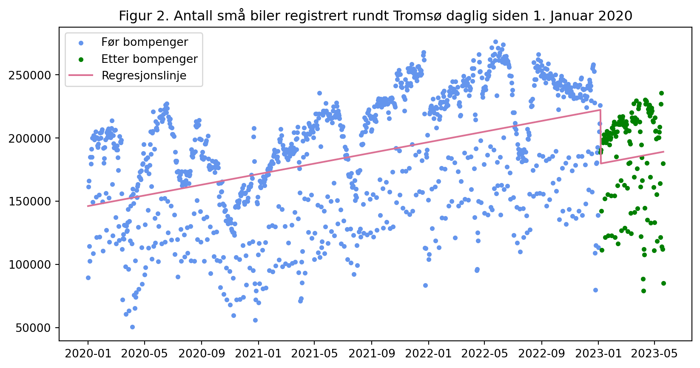
Avslutningsvis legges det ved et kart for å få en liten oversikt over trafikkregistreringspunkter og antall passeringer for hvert punkt siden 2020. NB: Dette kartet har ikke inkludert alle registreringspunkter, og inkluderer heller ikke sykkelregistreringer.
Liten oversikt over trafikktellestasjoner og totalt antall passeringer siden 2020
Syklister
Vi går videre for å se på hvordan sykkeltrafikken har utviklet seg i Tromsø siden 2020.
I figur 3 ser vi antall syklister totalt i hele Tromsø for 2021-2023, og det som stikker mest ut er at det var en stor økning i sykkelregistreringer måneden bompenger ble innført, men at trenden har gått nedover siden.
Det er verdt å merke at denne figuren ikke klarer å vise ordentlig effekten av bompenger enda siden vi ikke har kommet ordentlig inn i sykkelsesongen for 2023. I tillegg så har mai måned kun sykkelregistreringer frem til omtrent midten av måneden.
Figur 3 er basert på tall fra Statens Vegvesen, her er det satt sammen alle sykkelregistreringspunkt på Tromsøya og utenfor. Tallene er hentet fra Statens Vegvesen sin trafikkdata.
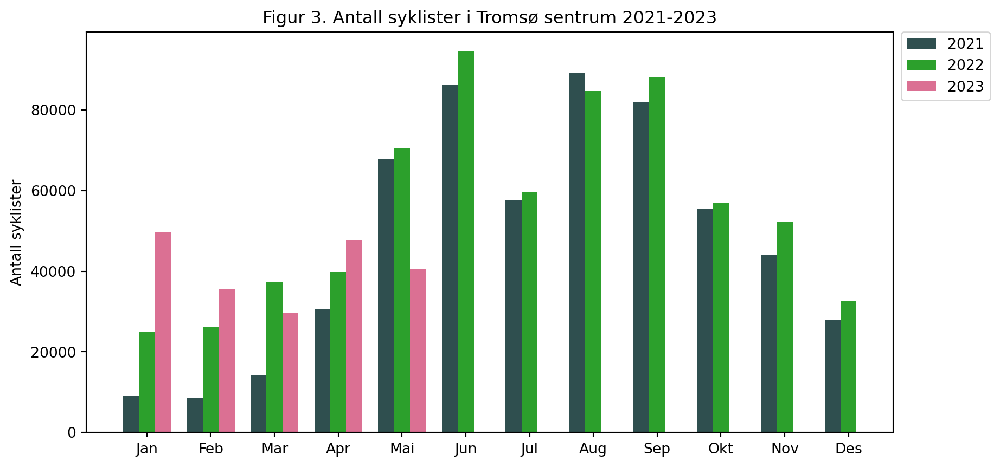
Vi ser på en regresjonsanalyse her også for å se om det er en forskjell i trenden for sykkelregistreringer før og etter bompenger.
Denne analysen er gjort omtrent på samme måte som beskrevet ovenfor, det som er gjort annereledes her er at datagrunnlaget er delt i før bompenger og etter bompenger, deretter så er det gjort en regresjonsanalyse for hver av disse dataene uten dummyvariabel.
Det vi kan se av resultatene er at helningen på regresjonslinjen er økende etter innføringen av bompengene.
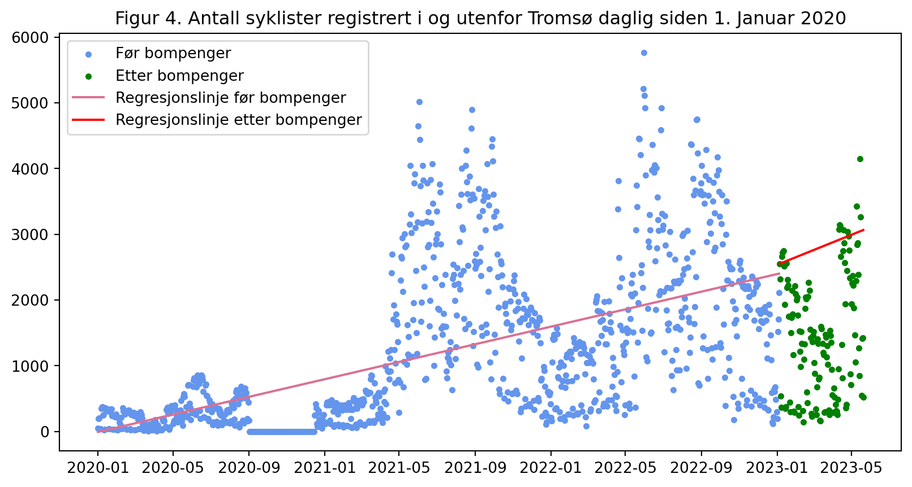
Kollektivreisende
For å avslutte overblikket i markedet skal vi se på kollektivreisende. Her skal vi se på totalt antall kollektivreisende i Tromsø hver måned siden 2022. Det vi kan se i figur 5 er at det i Januar 2023 var en økning på omtrent 64% reisende med kollektivtransport i Tromsø sammenlignet med Januar 2022. Og at alle måneder etter også har hatt en økning sammenlignet med året før.
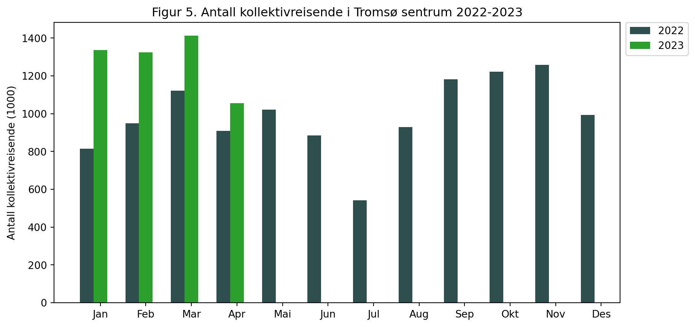
Til sist ser vi på en regresjonsanalysen av kollektivreisende i Tromsø med daglige observasjoner. Den avhengige variabelen her er totalt antall registrerte reisende mot den uavhengige variablen antall observasjoner(dager) hvor det er innført en dummyvariabel kalt bompenger.
I figur 6 ser man atferdstrenden til kollektivreisende før innføringen av bompenger i lyseblått og trenden etter i grønn. Når dummyvariablen bompenger treffer inn så ser man at trenden viser en oppgang i antall registrerte kollektivreisende.
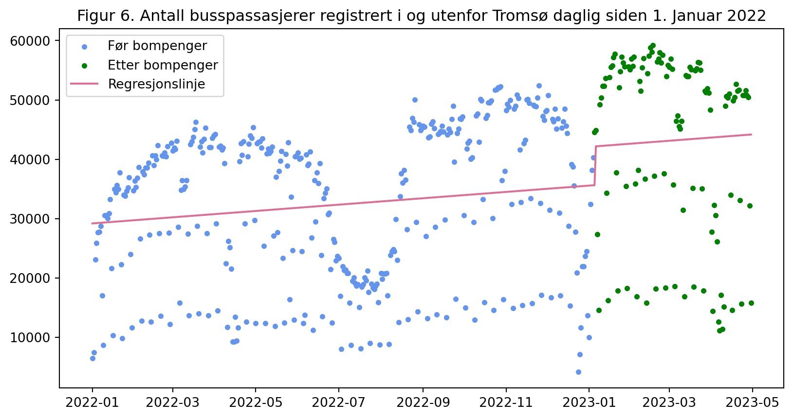
3. Bilisters tilpasning til bompenger
Tallgrunnlag
I denne analysen vil det ikke bli analysert biler uten gyldig AutoPASS brikke. Det vil bli sett på gjennomsnittlige små personbiler sin etterspørsel etter antall kilometer kjørt.
I denne artikkelen fra Nordlys får vi vite at gjennomsnittlig bompengeregning er på rundt 350 kroner hver måned i Tromsø som omgjort til årlig blir 4200 kroner.
Median årlig inntekt i Tromsø finner man på SSB her. Ifølge tabellen sier den at medianinntekten er på 48120 kr i måneden. Vi skal se på årlig median så da blir det 577 440 kroner for Tromsø i 2022. Grunnen til å bruke median er at det blir en bedre representasjon av inntekten til en person i Tromsø, da det ikke inkluderer den øvre lønnen og den nedre som gjennomsnittet gjør hvor henholdsvis det er noen få personer som tjener ekstremt mye og andre som kan ha en inntekt på 0.
Her finner man gjennomsnittlig kjørelengde for personbiler som er omtrent 12841 km i året i 2022.
I tabell 4 ser vi at en elbilist har en kostnad på 1,98 kroner per kilometer inkl. alle avgifter, og i tabell 5 ser vi at forbrenningsmotoren har en kostnad på 3,03 kroner per kilometer.
Tabell 4 og 5: Distanseavhengige kostnader per kilometer for elbiler og forbrenningsmotor (2022-kr).
| Elbil kostnader | Ekskl. avgifter | Inkl. avgifter excl. MVA | Inkl alle avgifter |
|---|---|---|---|
| Drivstoff | 0.19 | 0.23 | 0.27 |
| Dekk og Olje | 0.21 | 0.21 | 0.25 |
| Reparasjoner | 0.3 | 0.3 | 0.37 |
| Kapital | 1.1 | 1.1 | 1.1 |
| Total | 1.8 | 1.84 | 1.98 |
| Forbr. kostnader | Ekskl. avgifter | Inkl. avgifter ekskl. MVA | Inkl. alle avgifter |
|---|---|---|---|
| Drivstoff | 0.41 | 0.97 | 1.19 |
| Dekk og Olje | 0.27 | 0.27 | 0.33 |
| Reparasjoner | 0.46 | 0.46 | 0.55 |
| Kapital | 0.62 | 0.83 | 0.96 |
| Total | 1.76 | 2.53 | 3.03 |
Noen sentrale forutsetninger
Vi forutsetter at konsumentens inntekt i sin helhet går med til konsum, hvor konsumenten har to valg å velge mellom, konsumere andre goder eller å kjøre bil målt ved antall kilometer kjørt. Nytten pårvirkes bare av konsum av gode 1 og gode 2 idag og vi ser bort ifra muligheten for sparing.
I denne analysen blir det kun sett på en konsument som kjører elbil. Tallgrunnlaget er for mesteparten veldig likt for elbil og forbrenningsmotor så det vil ikke være alt for store forskjeller i resultatet annet enn at det blir å være noe dyrere for en bilist med forbrenningsmotor.
Konsumentens budsjettbetingelse
Konsumentens budsjettbetingelse er da gitt ved egen inntekt, videre antas det at prisen per enhet av gode 1 og 2 som vi kaller \(p_1\) og \(p_2\) er gitt sammen med konsumentens egen inntekt \(m\).
\[m = p_1x_1 + p_2x_2 \tag{1}\]
Hvor \(x_1\) er antall enheter av gode 1 og \(x_2\) er antall enheter av gode 2.
Hvor prisen på andre goder som vi kaller for \(p_2\) = 1 (dette er et direkte mål på penger) og prisen på per kilometer kjørt for elbil som vi kaller for \(p_1\) = 1,98 og \(m\) = 577 440. Da blir budsjettbetingelsen med tallgrunnlaget: \[577 440 = 1 x_1 + 1,98 x_2 \tag{2}\]
Vi kan løse denne ligningen med hensyn på en av variablene, eksempelvis \(x_2\) og da kan vi omformulere ligningen slik:
\[x_2 = \frac{577 440}{1} - \frac{1,98}{1}x_1 \tag{3}\]
Dette er en rett linje som forteller at konsumenten kan kjøpe maksimalt \(\frac{577 440}{1}\) enheter av gode 2, og for hver enhet av gode 1 som kjøpes må konsumenten gi opp \(\frac{1,98}{1}\) enheter av gode 2. Da er \(\frac{1,98}{1}\) den relative prisen på gode 1, og helningen til budsjettlinjen er \(-\frac{1,98}{1}\).
Følgende figur viser mulighetsområdet for konsum av andre goder og antall kilometer å kjøre for konsumenten:
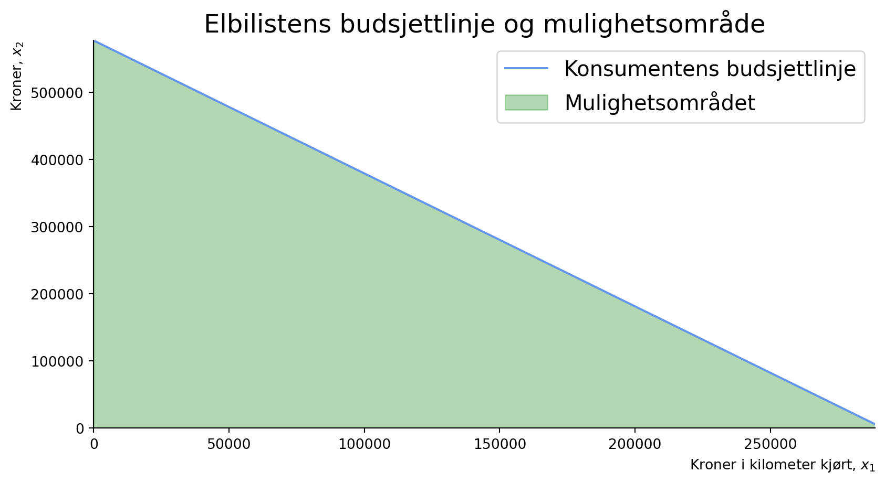
Endringer i budsjettbetingelsen etter innføring av bompenger
Før innføringen av bompenger var prisen per kilometer for en elbilist 1,98 kroner. Videre trenger vi å finne en pris per kilometer for elbilen med bompenger inkludert.
Fra tallgrunnlaget tidligere vet vi at årlig betaler en gjenomsnittlig tromsøværing bompenger for 4200 kroner per år. Dette er inkludert både forbrenningsmotor og elbil, men siden det ikke finnes noen direkte tall på kun elbil blir dette tallet brukt.
Vi vet fra tallgrunnlaget tidligere at gjennomsnittlig årlig kjørelengde for elbilister er på omtrent 12841 km i året.
Da blir prisen per kilometer kjørt for elbilister med bompenger:
\[\frac{4200}{12841} = 0,328 kr/km\]
Med prisen per kilometer kjørt fra tidligere og påslaget får vi da totalprisen per kilometer kjørt for elbilister med bompenger inkludert:
\[1,98 + 0,328 = 2,308 kr/km\]
I figuren under kan man se hvordan budsjettlinjen til elbilisten reduseres med økt pris per kilometer kjørt:
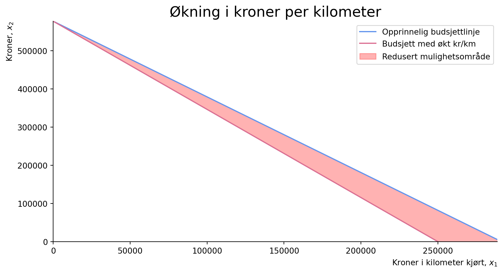
Fra konsumentens tilpasning til etterspørsel
Vi skal nå bruke en nyttefunksjon for å kunne modellere elbilistens valg av konsum av andre goder og antall kilometer kjørt. Vi antar at nytten til elbilisten er gitt ved en Stone-Geary nyttefunksjon som er tatt med utgangspunkt i LES-modellen:
\[max: U = \Sigma_i \beta_i \log(x_i - \gamma_i) \quad s.t. \quad \Sigma_ip_ix_i=y \tag{4}\]
Her er \(x_i\) mengden konsum av gode \(i\), \(p_i\) er prisen på gode \(i\), \(y\) er inntekten til konsumenten, \(\beta_i\) er en positiv parameter som måler den marginale budsjettandelen av gode \(i\) og \(\gamma_i\) er en positiv parameter som måler minimumskonsumet av det samme.
Med hjelp av Lagrange-multiplikatoren kan vi utlede husstandenes Marshalliske etterspørselsfunksjoner for produkt i:
\[x_i = \gamma_i + (\frac{\beta_i}{p_i})(y-\Sigma_jp_j\gamma_j). \tag{5}\]
Når utgiftene er en lineær funksjon av inntekt og priser, er det nyttig å multiplisere ligning (2.3) med prisene \(p_i\) Dette gir oss en lineær funksjon:
\[p_i x_i = p_i\gamma_i + \beta_i(y - \Sigma_jp_j\gamma_j) \tag{6}\]
Som er kjent som det lineære utgiftssystemet. Her er \(\Sigma_jp_j\gamma_j\) et nødvendig nivå av konsum, og \(\gamma - \Sigma_jp_j\gamma_j\) er den delen av inntekten som ikke blir brukt på konsum.
Videre i ligning 6 og 7 regner vi på uttrykk for egenpris- og krysspriselastisitet til gode 1 og gode 2:
Egenpriselastisitet:
\[e_{ii} = \frac{\gamma_i(1-\beta_i)}{x_i}-1 < 0 \tag{7}\]
Fordi \(\beta_i\) er positiv og \(\gamma_i\) er positiv, er \(e_{ii}\) negativ. Dette betyr at egenpriselasiteten normalt er negativ. En økning i prisen på gode \(i\) vil føre til en reduksjon i mengden av gode \(i\) som etterspøres.
Krysspriselastisitet:
\[e_{ij} = - \frac{\beta_i\gamma_jp_j}{p_ix_i} \tag{8}\]
Hvis elastisiteten er positiv, er gode \(i\) og \(j\) substitutter. Hvis elastisiteten er negativ, er gode \(i\) og \(j\) komplementær.
La oss se på økningen i prisen på gode 1, \(p_1\) som er prisen på per kilometer kjørt.
Vi tar utgangspunkt i 50/30/20 regelen. Denne sier at 50% av inntekten skal gå til faste utgifter, 30% til forbruk og 20% til sparing.
Hvis vi antar at elbilisten har en inntekt på 577 440 kroner i året, vil det si at 288 720 kroner går til faste utgifter, 173 232 kroner går til forbruk og 115488 kroner går til sparing.
Av disse 577 440 kronene i budsjettet inngår omtrent \[1,98 * 12841 = 25400\] kroner til konsum av bilkjøring. Dette blir \[\frac{25400}{577440} = 4.44\%\] av forbruket.
Det vil si at \(\beta_1\) som er andelen av inntekten som går til kroner per kilometer blir satt til 0.044, mens \(\beta_2\) som er andelen av andre goder blir satt til 0.956.
\[\beta_1 = 0.044 \quad og \quad \beta_2 = 1-\beta1 = 0.956\]
Med å fortsette på utgangspunktet i 50/30/20 regelen kan vi si at 50% av budsjettet blir brukt på gamma 1 som er minimumkonsumet for nytte av gode 1. Her settes \(\gamma_1\) da til 288720. \(\gamma_2\) blir satt til det samme av 25400/1,98 som blir 12841 kroner i kilometer kjørt.
Budsjettet har vi definert tidligere, det er \(m = 577440\).
Det vi kan se i figuren under er at før bompenger blir introdusert vil konsumenten tilpasse seg på indifferenskurven med å konsumere 18700 kroner i kilometer kjørt, den resterende inntekten på 540 000 kroner blir brukt til konsum av andre goder. En indifferenskurve er en kurve som viser alle kombinasjoner av to goder som gir samme nytte. I punkt A vises den optimale tilpasningen.
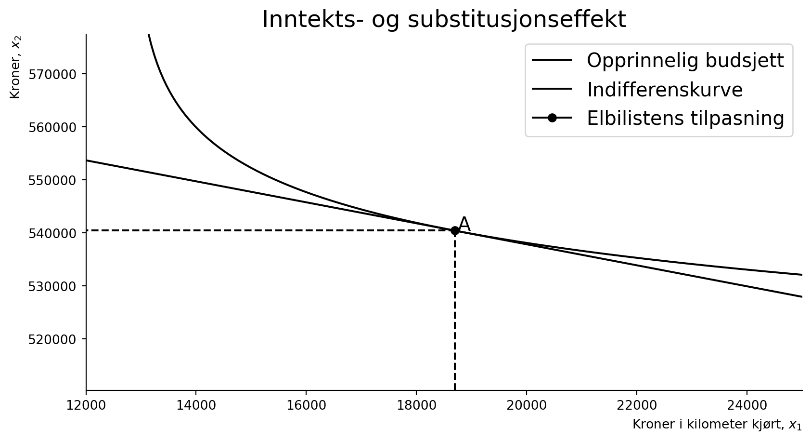
Etter innføring av bompenger blir konsumentens budsjettlinje forskjøvet nedover og mulighetsområdet blir mindre for å konsumere begge goder, med påslaget i bompenger vil konsumenten tilpasse seg på en ny indifferenskurve med et konsum på 17780 kroner i kilometer kjørt og 536 403 kroner til konsum av andre goder. Det vi kan se her er at bilistens konsum av gode 1 har sunket med 912 kroner i kilometer kjørt, og den nye tilpasningen blir i punkt B.
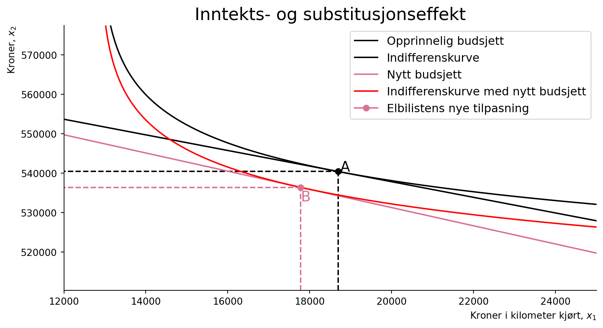
Det vi kan oppsummere med er at etterspørrselen på kilometer kjørt og andre goder reduseres. Vi får en substitusjonseffekt som er på -797 kr for antall kilometer kjørt og på 1709 kroner for andre goder. Totalt sett så reduseres den totale effekten siden den positive substitusjonseffekten for andre goder er mindre enn den negative inntektseffekten slik at det totalt sett blir negativt.
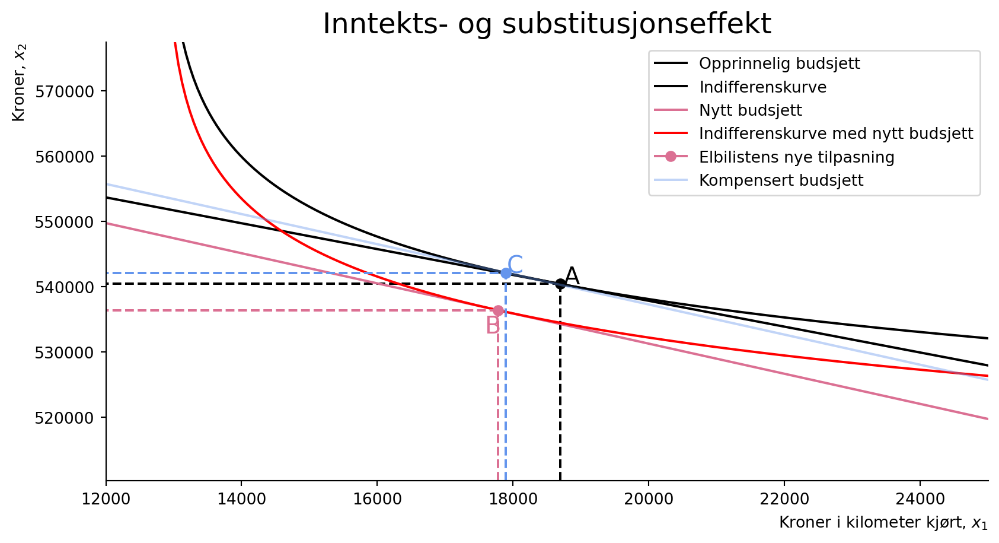
| Gode | Substitusjonseffekt | Inntektseffekt | Total effekt |
|---|---|---|---|
| Årlige kjørte kilometer | \(-797.42\) | \(-114.38\) | \(-911.81\) |
| Kroner på andre goder | \(1709.47\) | \(-5736.0\) | \(-4026.53\) |
Estimat av sentrale parameter
'Elbilistens egenpriselastisitet vi får her er -0.34.'Det vi finner ut av på både kort sikt og lang sikt er at elastisiteten på kroner per kilometer kjørt ikke er særlig stor, dette kan være fordi bilisten ikke har så mange alternativer til å kjøre bil i Tromsø. Med egenpriselastisiteten til gode 1 (pris per kilometer) vil etterspørselen gå ned 0.35% for hver en prosents økning på kroner per kilometer kjørt. På medium sikt ifølge SSB i dette dokumentet på side 16 ligger priselastisiteten på bilkjøring på - 0.14, som er noe høyere enn det som er regnet ut her, den er også -0.14 på lang sikt.
4. Konklusjon
Det vi kan se med innføringen av bompenger er at det ikke tilsynelatende på kort sikt har hatt en stor effekt på bilisters atferd og velferd i Tromsø. Som observert i kapittel 2 kunne man se en sterk reaksjon på bompengene den første måneden ved innføringen, men i månedene etter dabber effekten litt av.
Det virker som at introduksjonen av bompenger har hatt en positiv effekt på bruken av kollektivtransport og det kan virke som at sykkelbruken har gått opp, uten at man kan si noe alt for sikkert siden sykkelsesongen enda ikke har startet ordentlig i Tromsø.
I nyttefunksjonen ser vi at konsumenten blir å tilpasse seg å konsumere litt mer av andre goder enn elbilkjøring, men at relativt sett er effekten kun 912 kroner mindre konsum av elbilkjøring, og at den totale effekten blir at begge goder blir konsumert mindre. På lengre sikt sier elastisiteten at bilistene blir å være like lite prissensitiv, så man forventer at det blir å holde seg slik i fremtiden også, med mindre Tenk Tromsø innfører et høyere gebyr for elbilistene.
5. Referanser
Kilder
Les Finland 2012. (n.d.). Uit-SOK-1006-V23.github.io/forelesningsplan.md at main · uit-SOK-1006-V23/UIT-SOK-1006-V23.Github.io. GitHub. https://github.com/uit-sok-1006-v23/uit-sok-1006-v23.github.io/blob/main/forelesningsplan.md
Andreassen, V., Bredesen, I., & Thøgersen, J. (2016). Innføring I mikroøkonomi: For økonomisk-administrative studier. Cappelen Damm.
Konsumfordelingssystemet I Kvarts og Modag - Statistisk Sentralbyrå. (n.d.). https://www.ssb.no/nasjonalregnskap-og-konjunkturer/artikler-og-publikasjoner/_attachment/101943
Kjørelengder. SSB. (2023, March 22). https://www.ssb.no/statbank/table/12577/tableViewLayout1/
Lønn. SSB. (2023b, February 2). https://www.ssb.no/statbank/table/12852/
Johansen, T. D. (2023, April 26). (+) bompenge-snittet økte I Mars: – De Viktigste Tallene går Ned. Nordlys. https://www.nordlys.no/bompenge-snittet-okte-i-mars-de-viktigste-tallene-gar-ned/s/5-34-1776123
Trafikkdata. (n.d.). https://www.vegvesen.no/trafikkdata/start/eksport
Tenk Tromsø. (n.d.). https://tenktromso.no/
Og takk til Derek for kunngjøring om tall på busspassasjerer i Tromsø og for kode som er brukt fra forelesning 13 og forelesning 14.
Tabeller
Tabell 1: Dette er bypakke Tenk Tromsø.
Tabell 2: Konseptvalgutredning veibruksavgift og bompenger, vedlegg 6-3 Transportmodell beregninger.
Tabell 3: Konseptvalgutredning veibruksavgift og bompenger, vedlegg 6-3 Transportmodell beregninger.
7. Appendiks for ChatGPT
- Can you make this a latex table for me:
Prosjektnavn Kostnad Reduserte billettpriser 185 Tryggere skoleveg 315 Økt driftstilskudd kollektiv 340 Dramsvegen 40 Stakkevollvegen - Skattørvegen 200 Ny sentrumsterminal 315 Nytt bussknutepunkt i Kroken 35 Redusere flaskehalser for bussen 70 Strandvegen 120 Strandvegen 115 Ladeinfrastruktur elbuss 35 Bedre holdeplasser 135 Tilgjengelighet for gående - holdeplasser, snarveier 45 Utvidelse bybussområdet 20 Fortau 50 Bussløsning Kvaløya 135 Innfartsparkering Skjelnan 10 Klokkargårdsbakken 15 Sykehusvegen 45 Ny bussterminal i Giæverbukta 140 E8 Flyplasstunnelen i Tromsø 1800 Tiltakspakke Langnes 525 Utbedring gang og sykkelvei Kvaløyvegen 15 Ny bru til Kvaløya 1800 Etablering av bomstasjoner 35 Sum 6 540
- Navn Felt Trafikkmengde Dekningsgrad (%) < 5,6m Dato
2021-08-26 UIT/Planetariet Sykkel 1 55 50,0 - 2021-08-26 UIT/Planetariet Sykkel 2 110 50,0 - 2021-08-26 UIT/Planetariet Sykkel Totalt i retning Planetariet/UIT 110 50,0 - 2021-08-26 UIT/Planetariet Sykkel Totalt i retning UNN 55 50,0 - 2021-08-26 UIT/Planetariet Sykkel Totalt 165 50,0 -
I want to separate “sykkel and Sykkel” observations and only take them out from the df into a new one
I then want to instead of keep them make a bil_df that removes the sykkel and Sykkel observations
bil_df = df[df[‘Felt’].str.contains(‘Totalt’)] this code returns:
Navn Felt Trafikkmengde Dekningsgrad (%) < 5,6m Dato
2021-08-26 UIT/Planetariet Sykkel Totalt i retning Planetariet/UIT 110 50,0 - 2021-08-26 UIT/Planetariet Sykkel Totalt i retning UNN 55 50,0 - 2021-08-26 UIT/Planetariet Sykkel Totalt 165 50,0 -
I want it to only have the ‘Totalt’ not the other ones only ‘Totalt’
- ax.scatter(df_summary[‘Dato’], df_summary[‘Total’], s=10, label=‘Biler’)
How can I plot this to the date 05.01.2023 with one color and then go with another color after that date
is it possible to have color in my latex table
can you make this in latex table:
Kostnader Elbiler Ekskl. avgifter Inkl. avgifter ekskl. mva Inkl. alle avgifter Drivstoff 0,19 0,23 0,27 Dekk og Olje 0,21 0,21 0,25 Reparasjoner 0,30 0,30 0,37 Kapital 1,10 1,10 1,10 Totalt 1,80 1,84 1,98
- Bensin, diesel, ladbar hybrid
Nullutslippskjøretøy
Fullpris Gyldig avtale og brikke Fullpris Gyldig avtale og brikke Alle bomstasjoner (15) 12,00 9,60 12,00 4,80
make this a latex table for me
How can I get the \ to be just one big row
(latex tabell, kan ikke legge med denne da blir det error som jeg spør om til chatgpt)
why is this giving me error
- (latex tabell, kan ikke legge den inn her da blir den ikke å kompilere i latex…)
whats wrong here
- Navn Dato BREIVIKTUNNELEN Breivika Dramsvegen Fartstavle Tverrforbindelsen Giæverbukta nord HANSJORDNESTUNNELEN Hansine Hansens veg Hungeren Kraftforsyningen … Prestvannet Ringvegen Sandnessundbrua Sentrumstangenten Stakkevollvegen Strandvegen TROMSØBRUA Tromsøbrua avkjøring Tromsøysundtunnelen T1 Tromsøysundtunnelen T2 0 2020-01-01 3059 8994 NaN 5033 4913 4239 NaN
this is how the dataframe looks like, I want every column summarized to just form a new column called total for every date
- I have this dataframe in pandas:
Navn 0 0 BREIVIKTUNNELEN 776004.0 1 Breivika 2365496.0 2 Dramsvegen 193606.0 3 Fartstavle Tverrforbindelsen 1539626.0 4 Giæverbukta nord 2200892.0 5 HANSJORDNESTUNNELEN 1231460.0 6 Hansine Hansens veg 286818.0 7 Hungeren 1367510.0 8 Kraftforsyningen 1306417.0 9 Kvaløysletta nord 669889.0 10 Kvaløysletta sør 1572060.0 11 Kvaløyvegen 651427.0 12 Langnestunnelen 1725599.0 13 Postterminalen 1480449.0 14 Prestvannet 570758.0 15 Ringvegen 0.0 16 Sandnessundbrua 1487178.0 17 Sentrumstangenten 1008265.0 18 Stakkevollvegen 560257.0 19 Strandvegen 580096.0 20 TROMSØBRUA 2024122.0 21 Tromsøbrua avkjøring 1129561.0 22 Tromsøysundtunnelen T1 581562.0 23 Tromsøysundtunnelen T2 563815.0
this is locations in Tromsø. Could you make a new column and put in the coordinates for me for the places so I can plot it in an interactive chart